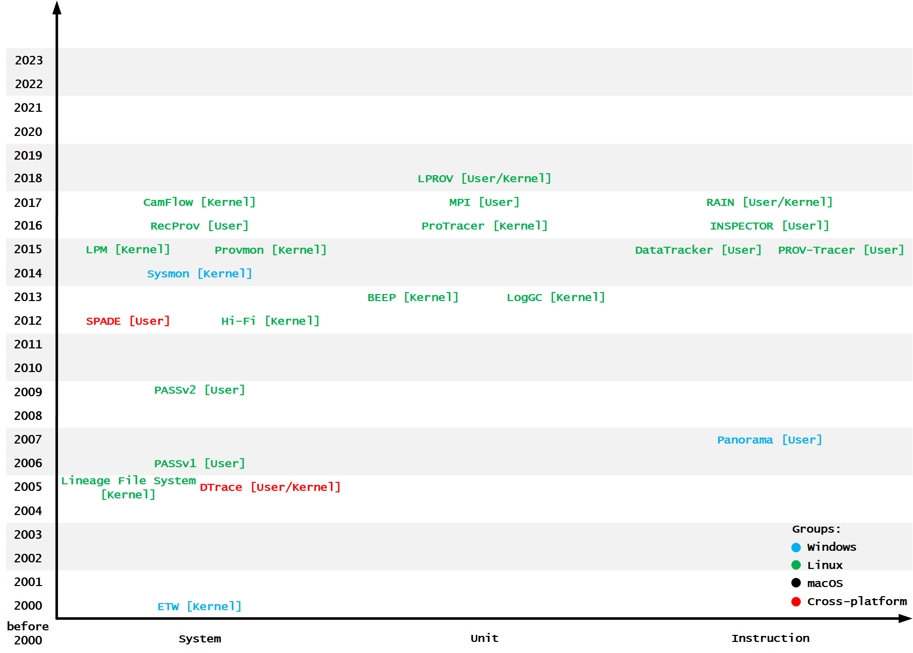

<!DOCTYPE html>

<html>
<head>
<meta charset="utf-8"/>
<meta content="width=device-width, initial-scale=1.0" name="viewport"/>
<meta content="ie=edge" http-equiv="X-UA-Compatible"/>
<title>Data Collection</title>
<style>
    * {
        margin: 0;
        padding: 0;
    }

    #mindmap {
        display: block;
        width: 100vw;
        height: 100vh;
    }
    </style>
</head>
<body>
<svg id="mindmap"></svg>
<script src="https://cdn.jsdelivr.net/npm/d3@6.6.0"></script>
<script src="https://cdn.jsdelivr.net/npm/markmap-view@0.2.6"></script>
<script>
    ((getMarkmap, getOptions, data) => {
        const {
        Markmap
        } = getMarkmap();
        window.mm = Markmap.create('svg#mindmap', getOptions == null ? void 0 : getOptions(), data);
    })(() => window.markmap, null, {'v': "<div style='display: flex; justify-content: center; align-items: center;'></div> <div style='padding-bottom: 20px; text-align: center;'><font color='green'><h3>Data Collection</h3></font></div>", 'd': 1, 'c': [{'v': 'System-level, 系统级', 'd': 2, 'c': [{'v': '<b>system calls(syscalls)</b> in the <b>User Space</b> / <b>Kernel Space</b>', 'd': 3}, {'v': 'Platforms', 'd': 3, 'c': [{'v': 'Windows', 'd': 4, 'c': [{'v': 'Event Tracing for Windows(ETW, 2000, Kernel)', 'd': 7, 'c': [{'v': 'log kernel or application-defined events', 'd': 8}, {'v': '(1)启动和停止事件跟踪会话的控制器', 'd': 8}, {'v': '(2)创建事件并在会话中发布事件的提供者', 'd': 8}, {'v': '(3)从会话中消费事件的消费者', 'd': 8}]}]}, {'v': 'Linux', 'd': 4, 'c': [{'v': '<del>Lineage File System(2005, Kernel)</del>', 'd': 7}, {'v': '<del>Hi-Fi(2012, Kernel)</del>', 'd': 7}, {'v': '<del>Provmon(Hi-Fi 的一个端口, 2015, Kernel)</del>', 'd': 7}, {'v': 'CamFlow(2017, Kernel)', 'd': 7}]}, {'v': 'macOS', 'd': 4, 'c': [{'v': '<a href="https://man.freebsd.org/cgi/man.cgi?query=auditpipe&apropos=0&sektion=0&manpath=FreeBSD+6.2-RELEASE&arch=default&format=html">AuditPipe(2006, Kernel)</a>', 'd': 7}]}, {'v': 'Cross-platform', 'd': 4, 'c': [{'v': 'Dtrace(2005, User/Kernel)', 'd': 7}, {'v': 'SPADE(2012, User)', 'd': 7}]}]}, {'v': 'Major Problem: 生成的来源图可能过于粗糙, 长时间运行的进程也会导致<b>依赖关系爆炸</b>的问题', 'd': 3}]}, {'v': 'Unit-level, 单元级', 'd': 2, 'c': [{'v': '将<b>系统实体</b>划分为<b>单元</b>来描述更细粒度的信息流, 从而拓展了系统级数据来源', 'd': 3, 'c': [{'v': '解决依赖爆炸问题: 将长时间运行的进程划分为单元、将文件划分为数据单元', 'd': 4}]}, {'v': '<del>Binary-based ExEcution Partition(BEEP, 2013, User)</del>', 'd': 3, 'c': [{'v': '长时间运行的流程具有由外部请求驱动并由事件处理循环主导的特征', 'd': 4}, {'v': '通过对应用程序的二进制文件进行逆向工程来检测这些事件处理循环及其因果关系', 'd': 4, 'c': [{'v': '使用二进制文件的符号表和调试信息来确定函数的入口点和参数,<br>然后通过分析函数的汇编代码来确定函数的行为', 'd': 7}, {'v': '使用动态二进制插桩技术来监视进程的执行,<br>并记录进程执行的系统调用和文件访问等操作的数据溯源', 'd': 7}]}]}, {'v': '<del>LogGC(拓展 BEEP, 2013, User)</del>', 'd': 3, 'c': [{'v': '将文件分割为逻辑数据单元, 并使用垃圾收集算法来删除冗余和不可达节点, 从而减少审计日志的大小', 'd': 4}]}, {'v': '<del>ProTracer(2016, Kernel)</del>', 'd': 3, 'c': [{'v': 'BEEP 和 LogGC 都有很高的运行时开销和空间开销, 因为它们将每个事件处理循环(甚至鼠标单击)划分为单元', 'd': 4}, {'v': '通过分析内核空间中的系统调用来检测事件处理循环, 只将关键操作(如文件写入、网络连接)的长时间运行进程划分为单元', 'd': 4}]}, {'v': '<del>Multiple Perspective attack Investigation(MPI, 2017, User)</del>', 'd': 3, 'c': [{'v': '基于用户定义的任务对长时间运行的进程进行分区, 任务表示用户的不同视角, 例如 Web 浏览器中的选项卡', 'd': 4}, {'v': '可以通过在可执行文件的源代码中添加注释来标识任务', 'd': 4}]}, {'v': '<del>LPROV(2018, User/Kernel)</del>', 'd': 3, 'c': [{'v': '拓展了 ProTracer 来跟踪库调用并将它们与系统调用关联起来', 'd': 4}, {'v': '因此 LPROV 可以跟踪恶意库攻击和库漏洞利用的数据来源', 'd': 4}]}]}, {'v': 'Instruction-level, 指令级', 'd': 2, 'c': [{'v': '<del>Panorama(Windows, 2007, User)</del>', 'd': 3}, {'v': '<a href="https://github.com/m000/dtracker">DataTracker(Linux, 2015, User)</a>', 'd': 3, 'c': [{'v': 'Taint Analysis', 'd': 4}]}, {'v': '<a href="https://github.com/Mic92/inspector">INSPECTOR(Linux, 2016, User)</a>', 'd': 3, 'c': [{'v': 'Panorama 和 DataTracker 运行时开销很高', 'd': 4}, {'v': '利用并行算法使用并发处理图(Concurrent Provenance Graph, CPG)来监视多线程应用程序的指令级数据出处', 'd': 4}]}, {'v': '<a href="https://github.com/m000/panda/tree/prov_tracer">PROV-Tracer(Linux, 2015, User)</a>', 'd': 3, 'c': [{'v': 'Panorama、DataTracker 和 INSPECTOR 都不能监控全系统', 'd': 4}, {'v': '全系统逆向工程工具, 利用 QEMU 仿真器来支持不同的体系结构', 'd': 4}]}, {'v': '<del>RAIN(Linux, 2017, User/Kernel)</del>', 'd': 3, 'c': [{'v': '基于图的可达性分析来过滤不相关的进程以减少需要重放的进程数量', 'd': 4}]}]}, {'v': "", 'd': 2}]})
    </script>
</body>
</html>